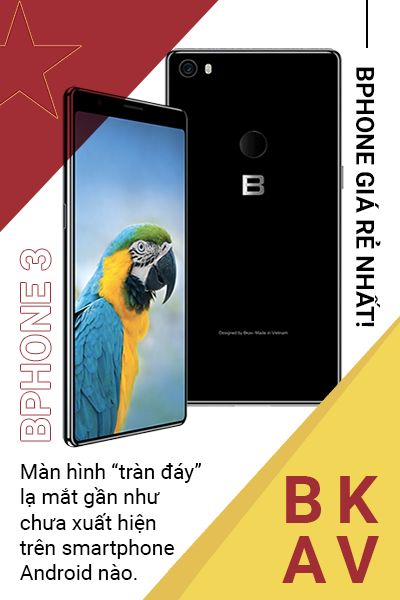

Tháng 9/2018: Xuất hiện điện thoại siêu bảo mật của Viettel
Chiếc điện thoại VIPPHONE bất ngờ xuất hiện với kiểu dáng giống những sản phẩm siêu sang của Vertu cùng lời giới thiệu ấn tượng: Tất cả các công đoạn từ thiết kế sản phẩm, chip bảo mật, lắp ráp,... đều được thực hiện tại Việt Nam.
Máy có những điểm nổi bật đáng chú ý như: Thiết kế đẳng cấp, trang bị mặt kính Gorilla Glass siêu bền, tích hợp chip bảo mật chuyên dụng mã hóa thông tin - cho phép tự hủy dữ liệu khi mất máy hoặc bị truy cập trái phép.
Tháng 10/2018: Asanzo ra mắt S3 Plus
Asanzo S3 Plus là chiếc smartphone mới nhất của hãng và là lần ra mắt sản phẩm thứ 3 sau hơn gần một năm rưỡi của Asanzo, cho thấy sự nghiêm túc của họ với chiến lược sản xuất điện thoại thông minh.
Máy có thiết kế màn hình tràn viền sử dụng tỷ lệ 18:9 theo xu thế, mặt lưng tạo hiệu ứng gương, trang bị cảm biến vân tay ở cạnh bên độc đáo và hỗ trợ cả nhận diện gương mặt..

Tháng 12/2018: VinSmart trình làng 4 smartphone đúng chuẩn "ngon-bổ-rẻ"
VinSmart đã mua lại 51% cổ phần của BQ – một startup công nghệ có tiếng đến từ Tây Ban Nha, từng đạt nhiều giải thưởng uy tín ở Châu Âu và có mối quan hệ tốt với các tên tuổi lớn trong ngành.
Chỉ 6 tháng sau lễ công bố quyết định sản xuất smartphone, VinSmart (công ty thuộc tập đoàn Vingroup) chính thức tung ra thị trường 4 mẫu Vsmart Joy, Vsmart Joy+, Vsmart Actice 1 và Vsmart Active 1+ thuộc phân khúc giá rẻ và tầm trung.